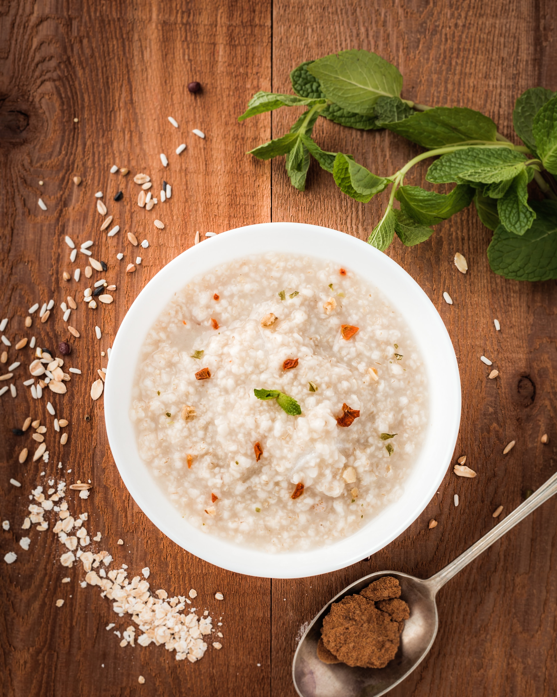

Oatmeal

Description
It's just oatmeal
Ingredients
- Buy some oatmeal packets that are made for brewing by hot water
Steps
- These things you've bought come with everything you need - even salt
- Just put one or two in a bowl
- Pour over some hot water from the kettle
- Wait about 5-20 minutes
- Mix it up and it's done
> See other masterpieces